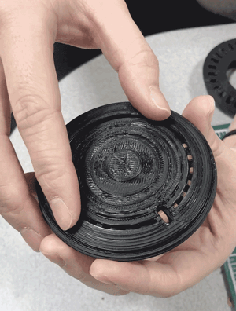
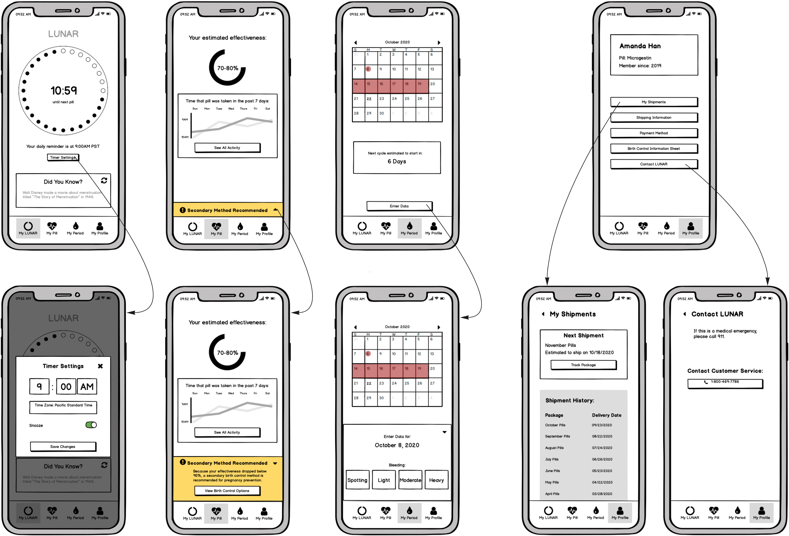

The Problem
Research & Insights
Design Goals
Ideation
Final Concept
Prototyping the Case
Information Architecture
Wireframes
Usability Testing
Final Design
LUNAR
A birth control pill you won't forget to take.

Introduction
Birth control can be a scary topic. As a female, I’ve had my fair share of conversations with my female friends about the birth control pill.
As the most commonly used contraceptive, I felt that the pill isn't very user friendly. To me, taking a pill at the same time every day seems nearly impossible. This made me think that there must be a way to improve the way we take the pill.
In this project, my partner and I explore how we can make taking the pill easier.
👯My Team
Shona O’Bryant
👩🏻‍💻My Roles
A collaborative project with my partner, where I focused on research and UX design.
⏳Duration
4 Weeks
🛠Tools
Adobe XD
Balsamiq
Photoshop
Illustrator
Solidworks
Keyshot
The Problem
It's only human to forget to take the birth control pill once in a while. But when you forget, there could be pretty serious consequences. Constantly worrying about missing the pill causes a lot of stress too.
Research & Insights
User Interviews
I interviewed 18 women who currently use the pill. My objective was to gain a solid understanding of pain points and identify design opportunities.

There's a lot of waste.
At this point, I also recognized how much waste was created by birth control pills. The fuse between the materials in the blister packaging makes it impossible to separate, and the whole packaging can only go to landfill.
My friend’s monthly birth control pill package. Most of these items aren’t recyclable.
In addition to the pack of pills itself, there are a couple of other items that come with your pills every month. According to the women I interviewed, they don't usually use this stuff. I also realized there's an opportunity to reduce the waste used in birth control pill packaging.
Design Goals
Scope
Help ease the stress of taking birth control pills.
Design Goals
- Help users track birth control intake.
- Ease their anxiety towards symptoms and effectiveness.
- Make taking the pill more fun.
Ideation
Exploring paper packaging and studying Ibuprofen paper packaging.

Exploring different mechanisms that can dispense birth control pills one by one.
Final Concept - A Reusable, Smart Pill Case
From interviews, I learned that the biggest inconvenience that users experienced was having to take the pill at the same time every day. To target this problem, we designed a birth control case that actively helps the user keep track of taking the pill.
Storyboard 1 - Using the Smart Pill Case
To ease the stress towards the pill’s effectiveness, the pill case includes a passive bluetooth technology. Turning the pill case will trigger the app, which will record the time that that the user takes the pill. The app will then use that data to estimate the pill’s effectiveness for the user to see.

Storyboard 2 - Registering for LUNAR

System Diagram
The empty pill trays are sent back to LUNAR, sanitized, and sent to the next user. The case permanently stays with the user, with an optional yearly maintenance option. This creates a circular economy with no waste in the process.

Prototyping the Case
We modeled different cases in Solidworks and 3D printed them to determine scale, form, and necessary components. We started by modeling the smallest size possible that could hold 28 slots, and ended up enlarging it slightly to make it easier to hold and turn.
Through different explorations, we created a working prototype with 3 components. The top and bottom snap together with enough space to turn, and the center piece holds the pills.
Information Architecture
Wireframes
Usability Testing
I conducted usability testing through 6 Zoom sessions. This group of women included 4 experienced pill users, 1 new pill user, and 1 user who has never used the pill. To start each session, I quickly introduced the smart birth control case concept.
📠Low-fidelity Feedback (3 users)
I went through the workflow screen by screen for feedback on the overall flow and structure. After receiving feedback from 3 users, I made some changes before moving on to high-fidelity designs.
My Insights
💡 Users would rather track their symptoms in the calendar. They suggested having a calendar that tracks both their symptoms and their period cycle.
💡 People usually get 3-4 months of pill supply at a time. I had originally designed the app to only ship 1 month’s supply at a time, which would be quite inconvenient.
📠High-fidelity Feedback (5 users)
I created a prototype in Adobe XD and conducted usability testing through screen sharing. My key takeaway was that it’s very important to users that they're able to track their symptoms, and be able to refer back to previous data. After this portion of testing, I focused on reworking the symptoms tracker in the interface.
My Insights
💡 Users might want to skip placebo pills and start next month’s pack to skip their period.
💡 Users don’t find the large reminder to use a secondary contraceptive method annoying, even when they’re only taking the pill for PMS or acne.
💡 Users prefer a personalized way to track their symptoms. They want to use this data to predict what might happen in the future.
Final Design
A New Birth Control Experience
We can't change the fact that birth control pills need to be taken every day, but we can help make that experience easier. Using bluetooth technology to track pill intake, LUNAR provides a stress-free, enjoyable, and more sustainable birth control pill experience.
Feel confident in your pill's effectiveness.
When your effectiveness runs low, you’ll get a reminder to use a secondary contraceptive method. This can also be permanently hidden in settings.
View your previous symptoms with ease.
See all your previously tracked symptoms in a color-coded calendar tracker.
Personalize your symptoms tracker.
Everyone experiences different symptoms. Personalize your tracker to fit what works for you.